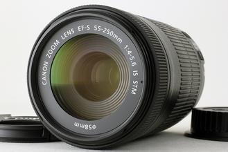

 EF-S 55-250mm f/4-5.6 IS STM是采用STM步进马达驱动自动对焦的小型轻量远摄变焦镜头。由于采用了STM步进马达，除静止图像外，在短片拍摄中自动对焦也安静流畅。作为一款APS-C画幅EOS系列数码单反相机专用的远摄变焦镜头，它能覆盖以35mm规格换算相当于约88-400mm的视角。灵活运用约4.5倍的变焦比，可通过中远摄焦段拍人像，还能用远摄焦段将体育比赛和舞台中的人物以及远处的建筑等拍得更大，丰富的表现力可轻松应对多种场景。约0.85米的最近对焦距离和约0.29倍的最大放大倍率非常适用于拍摄特写。支持全时手动对焦功能，在自动对焦完成后也可手动微调合焦位置。采用了对焦时镜头前端固定不旋转的设计，便于使用PL-C圆偏光滤镜。此外，这款镜头还搭载了可有效补偿色像差的UD（超低色散）镜片，全焦段都能获得高画质。通过采用超级光谱镀膜并优化镜片配置，尽可能地抑制了因镜筒内光线反射导致的鬼影和眩光。由7片叶片组成的圆形光圈能够形成柔和的大幅虚化和接近圆形的点光源虚化，灵活运用可展现丰富的表现力。IS影像稳定器最大可获得相当于提高约3.5级快门速度（250mm焦距端，根据CIPA标准）的手抖动补偿效果。搭配小巧的机身，在易发生手抖动的远摄焦段下也能轻松拍摄。
| 镜头焦距 | 55-250mm |
|---|---|
| APS-C画幅下的35mm规格换算焦距 *1 | 约88-400mm |
| 镜头结构 | 12组15片 |
| 光圈叶片 | 7片（圆形光圈） |
| 最小光圈 | 22-32 |
| 最近对焦距离 | 约0.85米 |
| 最大放大倍率 *2 | 约0.29倍 |
| 驱动系统 | STM +导螺杆型单元 |
| 最大手抖动补偿效果 | 约3.5级（250mm焦距端，根据CIPA标准） |
| 滤镜直径 | 58毫米 |
| 最大直径及长度 | 约Φ70×111.2毫米 |
| 重量 | 约375克 |
光圈值：f/11
快门速度：1/1000秒